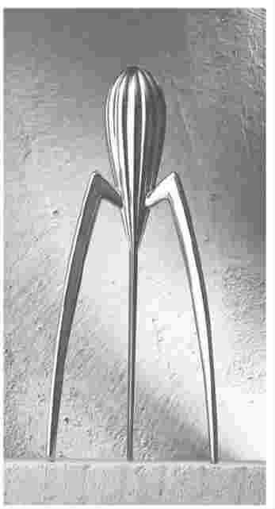
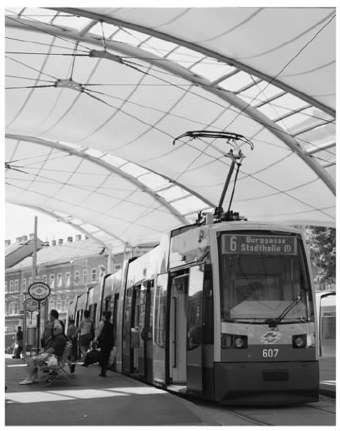
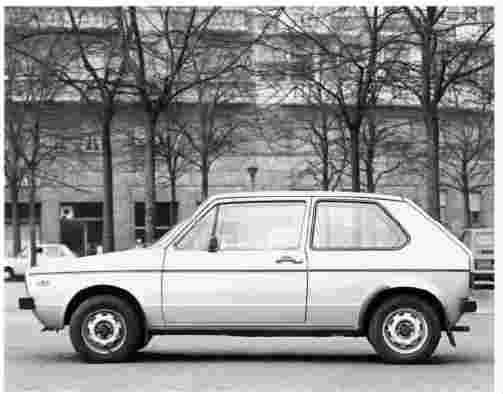
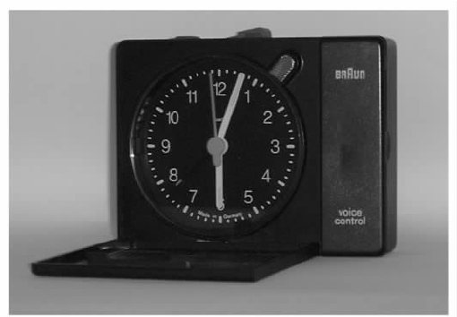
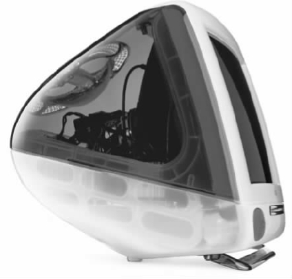
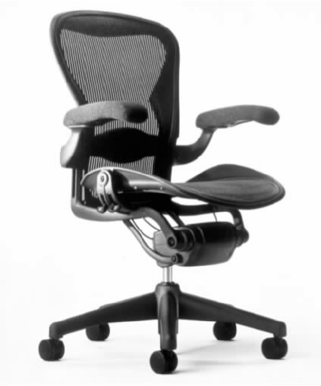

“物品”这个词被用来描述日常活动中，人们在家、公共领域、工作场所、学校、娱乐休闲场所和交通系统等环境下，接触到的数量庞大的三维立体人工制品。从简单的专用产品（如盐瓶）到复杂的机械装置（如高速列车）都属于这个范畴。其中有些是人类想象的表达物，另一些是高科技的产物。
人们将可以或应该怎么生活的理念注入到有形的物品上，而物品就成了这些理念的重要表达方式。物品传达的即时性和直接性，不仅仅是视觉上的，也可以是其他感官上的。比如，我们对于汽车的体验不仅来自它的外观，也来自对于座椅和操控性的感觉、引擎发出的声音、车内装饰发出的味道，以及行驶的状况。从多个方面协调感官效果能形成一种强大的累加影响。物品的构思、设计、感知以及用途等方面的多样性为我们提供了理解及阐释的多重视角。
在专业实践中，对这个术语的界定非常复杂。“产品设计师”和“工业设计师”这两个称谓在现实中是可以互换的，它们都表示在协调技术与用户的关系的基础上设计产品形式的人。“时尚设计师”这个称谓使用的范围更为专业。它通常被用来指称那些在商业操控下，执著于从审美上区分产品形式的设计师。“工业艺术家”是早期使用的一个术语，现在偶尔还会使用，它也从审美的角度强调了形式。许多建筑师也像设计师一样，使用多种方法。对于特别复杂而且性能要求又十分具体的物品，工程设计师会在技术标准的基础上决定它应该采用的形式。面对复杂的物品时，这个情况会变得更加复杂，必须要求多学科团队紧密协作。
在上一章的结束部分，我们讨论了设计师与用户各自关注方面的相互影响。总而言之，在这个基本结构内，有一些设计师总是更专注于他们自己的观点而不是用户的想法。二十世纪八十年代，在后现代主义名下集结了一批理论观点，这些观点进一步强化了这一做法。它们强调设计的语义价值而不是实用价值。换言之，人们在构想和使用产品时，参照的主要标准是它的意义，而不是它的用途。这些概念关注的焦点是设计师而非用户，从而导致生产出来的产品形式随意，与其用途少有或没有任何联系。但是，这些形式却被其“意义”赋予了存在的合理性。比如，除了那些长期以来生产的经典的、造型十分简洁的家用产品外，意大利的阿莱西公司近几年生产的一系列产品都反映了这种趋势。其中，最广为人知的应该是菲利普·斯塔克设计的名为“Juicy Salif”的柠檬榨汁器。斯塔克在设计造型独特、引人注目的产品上非常有才华。他设计的这个榨汁器在实际操作中完全无法完成其宣称的功能，然而，它却妄图成为“家用电器的楷模”。比起一个造型简单但效率高得多的机器，这个可以用来装饰厨房、富于时尚品味的榨汁器，将花掉你差不多二十倍的价钱。实际上，由于它主要是为了让商家获利而非为顾客提供服务，或许“剥削器”的名称应该更适合它。
无数的公司积极地采用这种特殊的设计方式，来给利润率低的产品注入附加值。结果，后现代主义的设计概念被大量用于商业目的，将原本高效、廉价、易得的产品转变成了无用、昂贵且难求的产品。对意义的强调甚至呈现出了一幅拥有无限可能的远景。人们不断更新形式，但这些形式与目的关联甚少，或者根本无关。它们将制造商的利益放在第一位，导致产品堕入时尚更迭的潮流之中。

图9 高价低效的新时尚：菲利普·斯塔克为阿莱西公司设计的“Juicy Salif”柠檬榨汁器。
时尚主要依赖于大众对于舒适性的界定，但现今人们却受到他人做什么和买什么的左右。这也是人性内在的特点。从这个视角来看，商品是社会和文化地位的标志。随着在发达工业国家人们可支配收入的增多，人们具备了炫耀性消费的能力。毫无疑问，一方面它加大了对个性产品的需求，另一方面消费者也受到了更为强烈的控制。这一现象引发了诸多反应，其中之一便是所谓的“设计师品牌”。经证实，这个手段非常有效，尤其是对于所有产品里那些更豪华的产品而言。
费迪南德·波尔舍 [3] 是其中一个很好的例子，其祖父是原大众甲壳虫汽车的设计师。费迪南德从家族汽车公司入行，1972年拥有了自己的设计室。他的设计活动中包括有很强实用元素的大型产品，比如为曼谷公共交通系统公司设计的列车、为维也纳设计的有轨电车，以及高速游艇。但是，他最有名的设计是与主要几家大制造商联合生产的高级个人用品，这些用品包括烟斗和太阳镜，都设计得十分精巧。这些制造商（如辉柏嘉公司或者西门子公司）本身就有很高的知名度，但在销售产品时，商标上仍注明由波尔舍设计。该设计本身已成为豪华商品的时尚标志。
如果我们将所有遵循“以设计师为中心”的方法都认定为只是通过形式辨别来增加价值，那么我们就会产生曲解。有些设计师洞察人们的生活，将不明显的问题通过有形的、可触的方式来展现，他们所设计的产品从根本上对这些问题提出了新的解决方案——换言之，他们满足了用户自己都没有意识到的需求——这是设计能起到的最富有革新精神的作用。

图10 实用、便利的设施：波尔舍为维也纳设计的有轨电车。
从这个意义上来说，现代社会中对于形式最具影响力的人物之一是吉尔盖多·乔治亚罗。乔治亚罗也是从一名汽车设计师起家的，他曾替菲亚特汽车公司、贝尔通汽车公司、吉亚汽车公司打过工。1968年，他与两名同事一起创建了“意大利设计公司”。世界上再也没有其他人像乔治亚罗那样对汽车设计的方向产生过如此巨大的影响了。他在1974年设计了大众高尔夫汽车，这款车成了小型仓门式后背汽车的典范。他在1978年为蓝旗亚汽车公司设计了第一款小型货车。他的作品最典型的特色是用色干净，线条优美，没有多余的装饰。意大利设计公司最初做一些工业设计，1981年后又成立了分公司——乔治亚罗设计公司。这个公司专注于更广的产品市场，包括照相机、手表、特快列车（即使是这类产品上都有他的标志）、地铁、小型摩托车、家用电器、飞机内部装饰以及街道设备。近来，他又设计了很多个性化的时尚商品。

图11 仓门式后背汽车的新型典范：吉尔盖多·乔治亚罗在1974年设计的大众高尔夫汽车。
对于有些设计师而言，为了保证作品的完整性，必须在设计上保有一定的控制权，这是设计实践中至关重要的因素。如果既想保有设计上的控制权，又想在市场上取得巨大的成功，那么就不仅需要有创意还必须具备高度的商业敏感。斯蒂芬·皮尔特经营的文特设计公司将总部设在加利福尼亚。这家公司因具有创新的理念和高质量的设计而享有盛名。众多大型公司为获得他的青睐而争相竞争，所以皮尔特无须为他的产品销售而烦恼。为了节省开支，同时保有同委托人就设计进行磋商的可能，他拒绝扩大公司规模。若是他的设计理念在未经他许可的前提下被擅自更改，他可以宣布合同无效。由于坚持了这样的规定，所以他能够保持设计的整体性。
在有些公司，个人的影响力可能起着决定性的作用，特别是在产品理念的定位，即它们在人们生活中该充当何种角色的问题上。以家用电器（如烤面包机、食品搅拌器和吹风机）领域为例，这些产品实际上每天只在很短的几分钟内被派上了用场。所以，关于产品的形式在其闲置时所起的作用就成了我们该关心的问题。
德国设计师迪特尔·拉姆斯将产品比作一位优秀的英国管家：在使用时，产品应该提供安静、高效的服务，在闲置时，它应该退居于一旁不显眼的位置。（白金汉宫一位退役管家曾建议出演《告别有情天》的演员安东尼·霍普金斯：“当你在一个房间里时，这个房间应该显得更空旷。”）直到二十世纪九十年代中期，拉姆斯在长达四十多年的时间内给博朗公司所做的设计采用的都是简洁的几何形式。他基本采用无彩色设计，主要用白色，细节处使用黑色和灰色。主要的色彩用在小处（如开关），通常有极强的目的性。博朗公司逐步建立的这套美学理念成为了二十世纪晚期家用电器设计领域最具影响力的势力之一，它为公司塑造了一种可直接识别的标志。后来者争相效仿，但能与之抗衡的很少。

图12 简约风格：博朗公司生产的AB 312型旅行闹钟，由迪特尔·拉姆斯和迪特里克·吕布斯设计。
相反，在斯特凡诺·马尔扎诺的指导之下，荷兰的飞利浦公司设计生产的同类产品试图呈现更为强烈的视觉形象。飞利浦公司的产品由一系列朴实简单的形式加上明亮的色彩设计而成，意在表明这类产品在闲置时也要在家庭生活中展现出鲜明的视觉效果。
当具有高度个性和创新性的形式与提高产品实际性能的目的相结合时，这些设计会变得相当成功。由乔纳森·艾夫设计、由苹果电脑公司于1998年推出的iMac系列电脑，一反之前常用的“牙膏色”，采用了透明的塑料外包装和配件，一时之间引起了轰动。艾夫在iMac系列中革新了电脑形式的设计理念。在这个系列中，他巧妙地通过形式强调了电脑的可亲性和连通性，将产品指向那些从未使用过电脑的人群。这种设计显然引领了一股潮流，这种透明色被四处滥用，渐渐变得重复而空洞，随即，另一波时尚接踵而来。

图13 风格和连通性：由乔纳森·艾夫设计的iMac系列电脑。
设计师本来就要通过设计来张扬个性，大部分的设计师都被培育成独立的创作个体，设计文献中无数的参考资料都指向“某位设计师”。毫无疑问，对于某些种类的产品，尤其是那些体积相对较小、技术含量不高的产品（如家具、照明设备、小电器和家用器皿），确实需要展现它们特别的风格。然而，在那些规格稍大的物品中，强烈的个人风格也可以产生强有力的影响。大量的设计师都被聘请来实践某个常常被忽略掉的概念。因为很多成功设计师的“个性”大多体现在富于创意的管理中而非实际的设计工作中，所以强调个性本身就有问题。因此，我们有必要将完全独立工作的设计师和处于团队工作中的设计师加以区分。对于后者而言，组织管理和加工处理与设计师的创造力具有同样重要的意义。
当一个小型设计顾问公司慢慢发展壮大时，设计师必将耗费一定时间在管理活动上，这使得个人的创作水平难以得到保持。米歇尔·德·卢基在米兰拥有一个大约五十人的顾问团，他的客户遍布全世界。但显然，并不是所有的咨询工作都由德·卢基本人完成，虽然他会确定方向并制定各种标准。但是，他为了保持自己的设计能力，同时还创建了一个小型的制作公司，确保他在一定程度上能够继续亲身探索个性的表达，而这一切在严格强调正规作业的集体中是不可能实现的。
然而，在设计工作的其他领域盛行着另外一种风气。许多设计顾问公司并不指向单一的个人，而是以事务所的形式出现。这些事务所麾下常有许多雇员，办事处遍布世界各地，涉及众多领域。其中最有名的一个当属一家英美联合设计顾问公司，IDEO设计公司。二十世纪九十年代末，它已经在伦敦、旧金山、帕洛阿尔托、芝加哥、波士顿和东京设立了办事处。梅塔设计公司在德国成立后，也走国际运营路线，它在旧金山和苏黎世都有分支机构。有些顾问公司提供一般性服务，其他一些则专攻某一个特殊领域。波士顿的设计连续体公司在设计医疗设备方面具备专家级水准，它十分重视设计师与机械师之间的紧密合作。顾问工作中的一个常见的特点就是团队合作，但是团队合作也许会掩盖个人的具体贡献。
企业的设计团队只需专注于具体产品和步骤的设计，生产操作由公司来执行。这样一来，它们能够深挖具体问题，研发出几代产品。同样地，它们会采用许多形式。这样的团队目前面临的问题就是，如何在保有细致而精确的专家水准的同时避免陈旧，这就意味着需要时时给团队注入新鲜的刺激。为了保持设计的连贯性，一些团队会固定一小部分的内部成员。同时，为了拓宽视角，它们会不时地吸纳新的顾问人员。另外一些团队，比如西门子公司和飞利浦公司，为了在同外部团队竞争时中标，要求团队的所有成员都像内部成员一样工作。但在工作之余，员工也可以接其他的工作。有些巨型企业，尤其是日本的一些公司，拥有庞大的内部团体。这些企业常常拥有一个由四百名设计师组成的团队，有时团队的规模更大。这些设计师中有很多人可能只是负责一个很具体的环节，对现有产品做一些细小的变动，努力满足更广泛的喜好。
如果说在设计思考和批评中提及“某某设计师”会产生个人偏好，那么另一个广泛流传但具有争议的指称——“某某设计过程”则暗示了实际操作中并不存在的一种统一性。实际上，为了适应设计者工作的对象和环境的巨大差异，设计过程也是多样的。
在这个范畴的一端是一些高度主观的过程。这些过程基于个人洞见和经验之上，我们要对它们进行解释和限定会很困难。尤其在公司里，一切都是靠金融和销售方法所展示的“各种事实”说话，这些过程往往会很容易被人忽略。然而，我们在经济和商业理论中达成了一项认知。在很多学科中，基于经验和洞见所获得的那部分知识，即所谓的隐性知识，可成为储藏巨大潜能的重要仓库。虽然这并不意味着设计的能力必须限制在隐性的范围内，但是许多设计知识实际上就属于这一种。在设计中，我们非常需要拓展可替换的知识形式。这些知识形式能被建构并适于传达，换言之，这些知识就是所谓的编码知识。
大部分应用学科，如建筑学和工程学，都有一套关于其实践内容和实践行为的基本知识和理论。它们为任何学生或者感兴趣的外行人搭建了一个平台和一个起点。设计面临的最大问题之一就是缺少一个类似的基础。强调隐性知识意味着许多设计系的学生必须做重复劳动，以非系统化的方式从操作中获取知识。实际上，比较理性的调查和工作的方法反而被认为是不重要的。
比如在那些强调形式差别的地方，隐性知识作为主观方法也许适用于小型工程。相比之下，大型工程牵涉了复杂的技术问题，需要协调各个层次间的相互影响，个人直觉不一定能够处理所有必然的状况。针对这样的工程，合理且高度组织化的方法能够确保工程的所有方面被视作一个平台。在这个平台之上，通过具体的操作，人们可以创造性地解决问题。比如，在极度重视物品与顾客契合度的地方，人机工程学依靠人文研究提供的各项数据，能够确保形式在一定程度上合乎任何特定人群的需求。由唐·查德威克和比尔·斯顿夫为赫尔曼·米勒公司量身设计的“阿埃隆铁铝合金椅”就是在极其细致地参考了人机工程学数据后进行的创造性发挥。这款办公椅设计精巧，考虑周详。
人们研发出计算机辅助方法，将它们用于分析重要的、复杂的问题。其中一款名为“结构规划”的程序是由查尔斯·欧文在芝加哥伊利诺伊理工大学的设计学院里研发出来的。依靠计算机的辅助，人们将问题分解至组元，详细分析组元后，将其重新装配成新的更富创造性的综合体。一些公司（如世界上最大的办公用品制造商，斯蒂尔凯斯办公用品公司）利用结构规划程序对复杂的大规模市场做出前景预测，提供发展建议。科勒卫浴公司经营卫浴设备，它运用这个程序生成了大量的产品议案，其中一个已经上市的产品便是嵌入式浴缸。沐浴时，入浴者能够将水注满内部的浴缸，享受深层浸泡。

图14 形式和人机工程学：由唐·查德威克和比尔·斯顿夫为赫尔曼·米勒公司量身设计的“阿埃隆铁铝合金椅”。
在观念形成方面，市场分析是一项长期使用、强而有力的工具。在二十世纪八十年代早期，日本佳能公司的设计组考察了复印机销售模式，发现市场被非常昂贵的具有切削刀技术的大型机器所占据。基于现今已被广泛认可的技术，设计组推测体积相对较小、造价相对较低的个人复印机应该切实可行。因为推测合理，佳能公司获得了巨大的市场成功，在这个领域赢得了优势地位。
在另一个层面，人们也从人类学和社会学等学科中借用方法论，试图了解用户存在的问题。比如，利用行为观察方法可以预见人们在不同情景下（如工作环境、购物或者学习中）可能遇到的困难。在时空之内进行的详细观察可以揭示出种种困难，而这些困难又可以通过新的设计予以解决。
尽管大多数物品在生产时都被赋予了特定用途，但是，当我们从设计师最初设想的角度进行分析时，仍会遇到一些问题。在实际使用过程中，人们常常破坏或颠倒设计师的原意，人们非常善于将物品用于其特定用途之外。（想想一个金属书夹能够用于其他哪些用途。）一把椅子可以是一个座位，但也可以用来堆放纸张或书、悬挂衣服，或撑开房门，在换灯泡时，还可以用它来垫脚。按制造商最初的设计，录像机是用来播放已经录好的带子的。但是，用户不久就开始使用空白带来录制电视节目，以供他们在方便的时候观看，这样就可以不再受广播公司限制。尽管并非所有情况都如此，但就一般而言，附加功能可以补充或丰富原来的设计意图。比如，大量警察局的记录显示，餐刀或者剪刀很容易成为伤人的凶器。
一些制造商试图把用户的这项能力作为一种有利资源。如果不知该如何处置一项新技术或新产品，他们常常以体验形式将其投入市场，鼓励用户试用，以期用户强大的改造能力能够挖掘出这些技术或产品的实用性。我们在研发“即时贴”系列产品时，一方面依靠3M公司研制出的可反复粘贴的黏合剂，但另一方面主要还是从人们对普通纸张形式拓展性的使用（如书签、传真标签、购物单等等）中得到了启示。运动鞋的设计也受到了大街上年轻人各式标新立异的穿法的启发，可以说它也是沿着相似的路线演变而来的。
1951年，英瓦尔·坎普拉德在瑞典成立的宜家家具公司又是一个鼓励消费者参与的例子。宜家连锁店现今遍布世界各地，邮购业务发达。通过消费者参与的形式，宜家家具公司已经重新界定了产品的生产过程。为了方便运输，它生产的组件都能进行平板式封装，而且每个组件的设计都必须确保消费者在购买后能在家里轻松地进行组装，这样一来，就节省了大量的费用。消费者能以更低廉的价格购买产品，从中获得实惠。另外，宜家的成功还归功于它一贯坚持的设计追求。瑞典现代的工艺美术风格是宜家的主要设计追求，这个风格贯穿了所有的操作工程，使宜家家具公司能在世界市场上保有地方特色。然而，这在不同的使用环境中也会出现一些问题。比如，当宜家家具公司生产的床第一次投入美国市场时，床的尺寸和美国通用的床单被褥的尺寸居然不配套。
当我们考虑哪种程度的革新比较恰当，何种设计方法最适合某些特定产品的时候，生活周期的概念变得极为重要。任何新产品刚问世的时候，不确定性因素大量存在，典型的形式试验能探测到多种可能性。当市场形成并稳定以后，产品获得了一系列具体特性，并逐步变得标准化，此时，侧重点会偏向产品的质量和价格。例如，二十世纪八十年代初，尚处试验阶段的个人电脑存在着大量的可能性。随后，IBM公司推出的个人电脑形式逐渐占据了主导地位。与此同时，苹果电脑在平面设计中得到了广泛的运用。近来，基于高效、经济的生产系统，戴尔电脑公司或康柏电脑公司逐渐成为了关注的焦点。这些公司产品的基本质量和性能都毋庸置疑。市场建制已经逐步完善，消费市场日趋饱和。在这种情况下，人们普遍开始关注电脑附加功能和感官上的差异。在手机通讯等系统日趋激烈的竞争之下，固定电话已经发展到了所谓的“功能蔓延” [4] 阶段。一部电话可能拥有八十多项功能（大部分功能都匪夷所思），形式繁冗，有香蕉、西红柿、赛车、运动鞋以及米老鼠等形式。
由于有些产品的基本形式是从功能的角度确立的，想改变这些形式异常困难，所以，它们能成功地抵制这种滥用现象。以电熨斗为例，台板式设计能够非常好地契合它的工作，之后的设计只能在现存形式上做小的改动。
在针对各类问题制定的法律、法规中，可能有些并没有明确提到设计，但它们都对产品性能设定了严密的参量。这些法律、法规成了设计活动主要的约束。在美国，产品责任法规定制造商需对产品造成的损伤负责；《美国残疾人法》规定环境和交通设备要为残疾人提供通道。在德国，一系列的环境立法要求产品或包装使用可回收材料，而且制造商要负责商品包装的处理。若产品说明书中未包含这些要求，制造商将为此付出高昂的代价。
当代设计师需要面对的更多挑战是与不断发展的技术保持同步。二十世纪，电力取代了机械能源，到了世纪末，电子技术大肆进入各个领域，这些都从根本上改变了很多物品的特性。小型电路板携带的双重功效和电脑芯片惊人的处理能力早已推翻了形式反映功能的理论。处理过程不再可视、可触或清晰明了，承载这些技术的载体要不就没有个性特征，要不就受形式操纵，试图引领时尚或生活方式的走向。
比如，全球使用的自动柜员机就是个性缺失的一个典型范例。这些柜员机常常被嵌入建筑物的墙体内，是银行的交付点，承担一度只有银行柜员才能提供的服务。这项服务的完成，必须依赖于硬件和软件的结合。首先，它的物理结构必须能够保护到机器内的现金。另一方面，对于用户而言最重要的是它的软件系统。为柜员机设计的交互式程序要确保用户能够提取到现金。所以，自动柜员机作为一件物品，其本身并不重要，重要的是由计算机支持的系统界面。自动柜员机带来的便捷是对先前处理方式的巨大超越，然而，它们常常被时下的理论引用，沦为人类异化的证据。然而，并非是技术造成了人类的异化，而是在面对新问题时，我们采用的设计方案欠妥当。
有预测显示，在未来，微芯片将引发更大范围内的物品革命。椅子可内置传感器，能够对坐着的人做出反应，根据他们的体积和习惯姿势进行自动调节。同样，我们也能想象，运动鞋在不同情况下做出的相应调整，无论穿鞋者是站立、行走还是跑步，不管他们是在柏油碎石地面、草地、沙滩还是岩石上。
但是便捷的形式使设计师和用户之间的关系出现了更多问题。物品是否主要是设计师通过努力操控创造欲望，用来表现自我的玩具？或者，它们确实是设计师根据用户的需求或发现用户的需求，在意义和应用方面做出的回应？